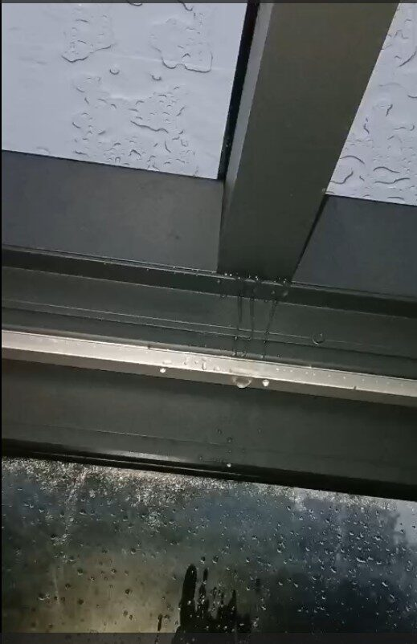
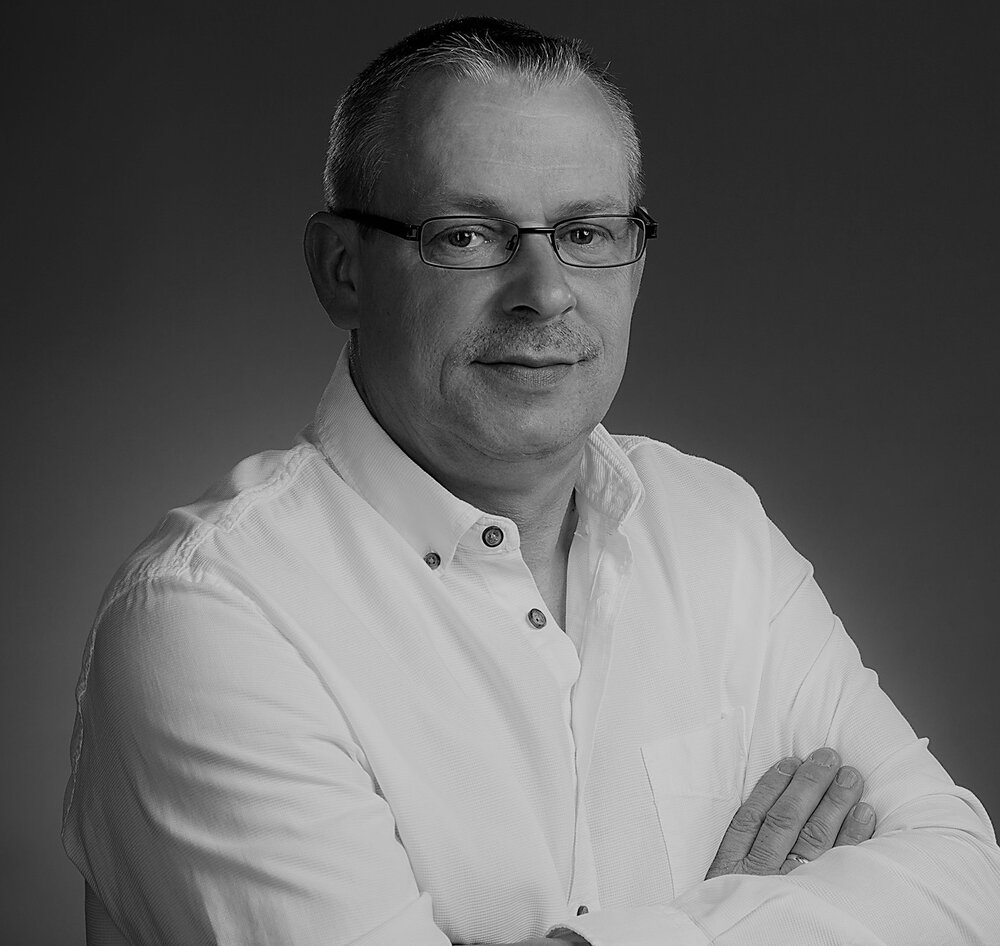
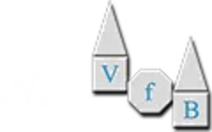
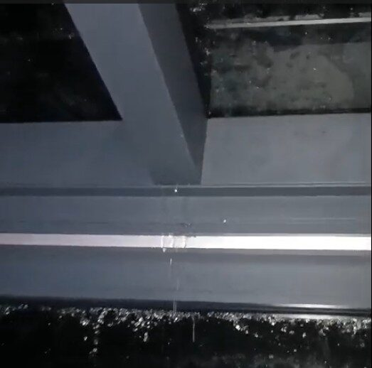
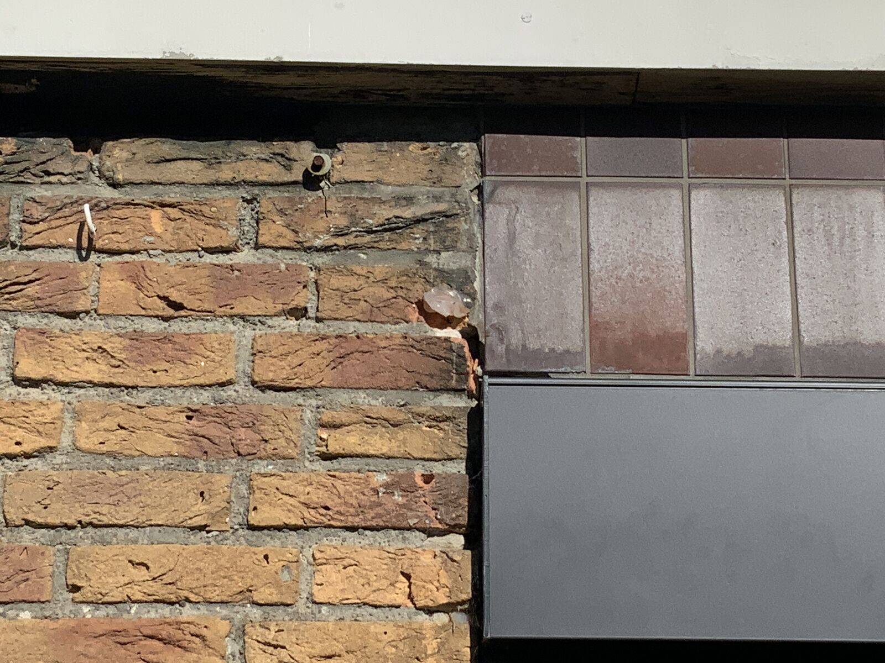
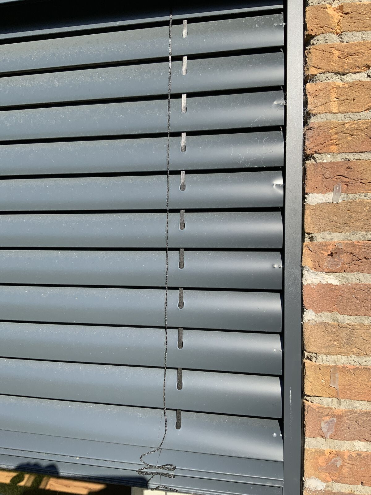
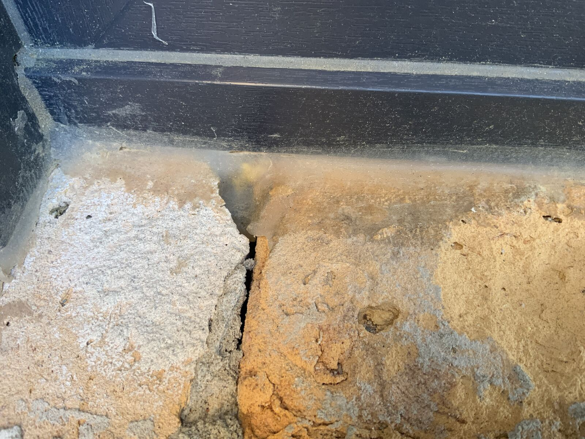
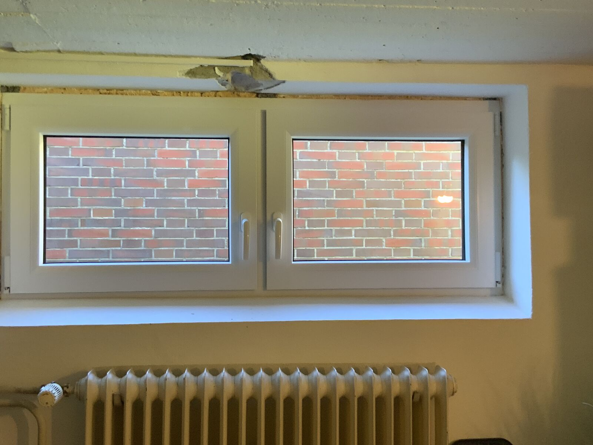

Beratung vor dem Immobilienkauf
Technischer Blick auf Zustand, sichtbare Mängel und erkennbaren Instandsetzungsbedarf, bevor Sie sich entscheiden.
Anfrage stellenKlarheit bei Baumängeln
Ich prüfe Terrassenüberdachungen, Gartenzimmer, Fenster und Verglasungen unabhängig – und übersetze technische Befunde in klare, nachvollziehbare Aussagen.

Ihre drei Kernfragen
Wiefelstede · Ammerland · Raum Oldenburg · nach Vereinbarung überregional
Leistungen
Technischer Blick auf Zustand, sichtbare Mängel und erkennbaren Instandsetzungsbedarf, bevor Sie sich entscheiden.
Anfrage stellenPrüfung von Montage, Anschlüssen, Entwässerung, Verglasung und sichtbaren Ausführungsfehlern.
Anfrage stellenTechnische Einordnung bei Undichtigkeiten, Funktionsproblemen, Schäden und Streit über die Ausführung.
Anfrage stellenUnabhängige Kontrolle von Einbau, Funktion, Dichtheit, Oberflächen und erkennbaren Abweichungen.
Anfrage stellenEinordnung von Feuchtigkeit, Rissen, Putz- und Anschlussschäden sowie sichtbaren Folgen mangelhafter Ausführung.
Anfrage stellenUnabhängige Begleitung während der Ausführung und ein prüfender Blick vor der Abnahme, solange sich Abweichungen noch einfach beheben lassen.
Anfrage stellenWenn Aussagen sich widersprechen
Genau an diesem Punkt braucht es eine unabhängige technische Sicht – ohne Verkaufsinteresse und ohne vorschnelle Versprechen.
Sie beschreiben das Bauteil, den Schaden und die bisherige Situation. Fotos und Unterlagen helfen bei der ersten Einordnung.
Wir klären, ob eine Beratung, ein Ortstermin, eine Dokumentation oder ein ausführliches Gutachten zu Ihrer Fragestellung passt.
Sie erhalten klare Aussagen zu Befund, wahrscheinlicher Ursache und technisch sinnvollen nächsten Schritten.

Ihr Sachverständiger
Als freier, unabhängiger und zertifizierter Sachverständiger vertrete ich die Interessen meiner privaten Kundinnen und Kunden. Fachkompetent und zuverlässig erstelle ich qualifizierte Gutachten im Tischlerhandwerk sowie für Terrassenüberdachungen und Wintergärten. Dabei sichere ich Beweise, dokumentiere Schäden und ermittle deren Ursachen.
Darüber hinaus bin ich beratend, vermittelnd und mediativ bei Streitigkeiten zwischen Handwerksbetrieben und deren Kundschaft tätig. Mein Ziel ist es, sachgerechte und für alle Beteiligten nachvollziehbare Lösungen zu finden.
Fachkompetenz steht für mich an erster Stelle. Ich verfüge über mehr als 35 Jahre Berufserfahrung im Tischlerhandwerk – davon war ich zehn Jahre als Altgeselle für die fachliche Qualität verantwortlich.
Damit Schadensgutachten stets umfassend und fachlich fundiert erstellt werden können, arbeite ich mit erfahrenen Fachleuten und Sachverständigen aus verschiedenen Handwerksbereichen zusammen.
Mitgliedschaften

Sinnvoller Leistungsumfang
Für eine erste technische Einschätzung und die Frage, wie Sie sinnvoll weiter vorgehen.
Nachvollziehbare Aufnahme sichtbarer Auffälligkeiten und des Zustands zum Besichtigungszeitpunkt.
Ausführliche Bearbeitung einer klar definierten Beweis- oder Bewertungsfrage.
Aus der Praxis





Häufige Fragen
Sinnvoll ist der Zeitpunkt, an dem sich Aussagen widersprechen oder Sie eine Einschätzung brauchen, bevor Sie entscheiden. Je früher der Zustand festgehalten wird, desto besser lässt sich später nachvollziehen, was vorlag. Auch vor dem Ablauf von Gewährleistungsfristen lohnt sich ein Blick.
Hilfreich ist alles, was den Auftrag und die Ausführung beschreibt:
Fehlt etwas davon, ist das kein Hindernis – wir klären dann vor Ort, was sich feststellen lässt.
Nein. Häufig genügt eine fachliche Beratung oder ein Ortstermin mit Zustandsdokumentation. Ein ausführliches schriftliches Gutachten ist dann sinnvoll, wenn eine klar definierte Beweis- oder Bewertungsfrage beantwortet werden muss. Welcher Umfang zu Ihrem Fall passt, besprechen wir vorher.
Mein Schwerpunkt liegt in Wiefelstede, im Ammerland und im Raum Oldenburg. Termine darüber hinaus sind nach Vereinbarung möglich; Anfahrt und Aufwand stimmen wir vorab ab.
Das hängt vom Umfang ab: Eine erste fachliche Beratung ist deutlich schlanker als ein ausführliches Gutachten. Nach Ihrer Schilderung nenne ich Ihnen den voraussichtlichen Aufwand, bevor ein Termin vereinbart wird.
Persönlicher Erstkontakt
Am hilfreichsten sind der Ort des Objekts, das betroffene Bauteil, eine kurze Beschreibung und einige Fotos. Anschließend lässt sich klären, welcher Prüfumfang wirklich sinnvoll ist.
Direkter Kontakt
0176 70568661 info@sachverstaendiger-fangmann.deFotos und vorhandene Unterlagen können Sie der E-Mail direkt beifügen.
E-Mail-Anfrage vorbereiten